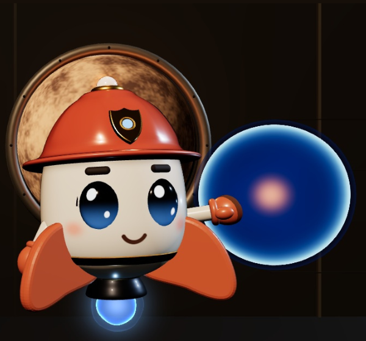
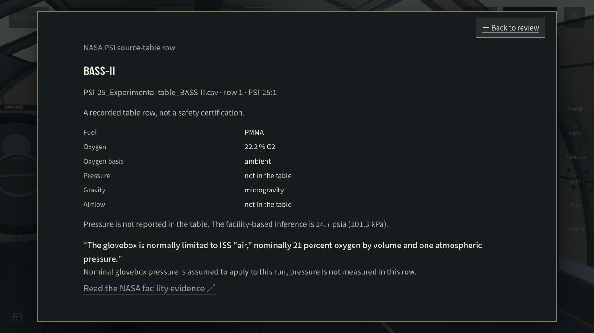
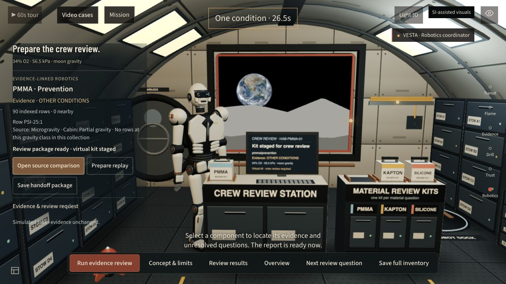

fire questions for a lunar habitat have a NASA test row at nearby conditions in our collection.
34% O2 · 56.5 kPa · 1/6 g — 1,989 rows, none at partial gravity

| IN THE 288 CABIN-MATERIAL ROWS | LUNAR HABITAT | |
|---|---|---|
| Gravity | microgravity288 of 288 rows | 1/6 g0 rows |
| Oxygen | 14.2 – 22.2%79 of 288 rows report it | 34% |
| Pressure | not in the row0 of 288 rows report it | 56.5 kPa |
Nearby = same gravity class, O2 within ±1 point, pressure within ±5 kPa.
Flow and geometry are not compared.
Held fixed: 21% O2 · 101.4 kPa · same 45 questions.
Every row in this collection with a gravity value is microgravity.

ROW PSI-25:1 BASS-IIPMMA film · 22.2% O2 · microgravity
PRESSURENot in the table. 101.3 kPa assumed from a NASA facility guide, and labelled so.
STATION CASE (SLIDE 4)All 24 nearby row matches behind those 3 questions rest on that assumption.

App capture: the completed state, after approval.